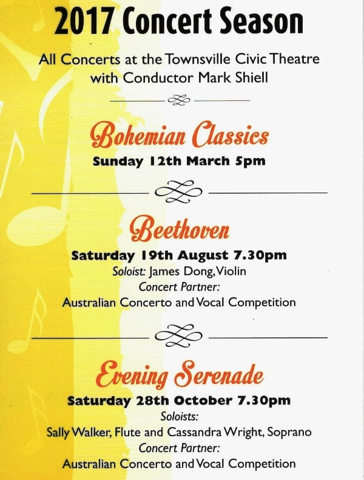

Local Orchestras
Barrier Reef Orchestra


Upcoming local concert for Townsville Orchestra "Barrier Reef Orchestra"
Beethoven, Bohemian Classics and evening serenade.
AUSTRALIAN CONVERTO AND VOCAL COMPETITION
Bohemian Classics- Sunday March 12 5pm.
Tickets available at Ticketsop.
47 27 97 97.
Adult: $38
Concession: $34
Student: $15
NQE Member: $32